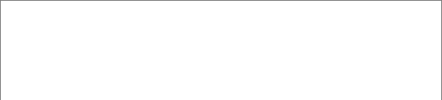
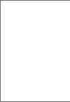

需求

需求说明

私聊逻辑

1、普通用户之间可以发私信；
a、普通用户的个人主页增加聊天入口；
2、普通用户必须是KOL的包月及以上会员才可以聊天；
a、kol未回复之前，用户只能发3条消息；
3、kol可以和任何人聊天；
@我的
1、聊天列表增加“@我的”入口，展示所有@我相关的动态列表；
2、收到新的评论需要有小红点标识；
a、小红点显示当前有多少新的评论未读；
b、从消息列表进入评论列表后再返回消息列表，小红点清零。

收到的评论

1、聊天列表增加“收到的评论”入口，展示所有对我的回复（包含发布动态的评论、回复的评论）；
2、收到新的评论需要有小红点标识；
a、小红点显示当前有多少新的评论未读；
b、从消息列表进入评论列表后再返回消息列表，小红点清零。
3、评论的入口默认置顶在消息列表；

收到的赞
1、聊天列表增加“收到的赞”入口，展示所有对我发布的内容点赞（包含发布动态的点赞、回复的点赞）；
2、收到新的点赞需要有小红点标识；
a、小红点显示当前有多少新的点赞未读；
b、从消息列表进入点赞列表后再返回消息列表，小红点清零。
3、点赞的入口默认置顶在消息列表；